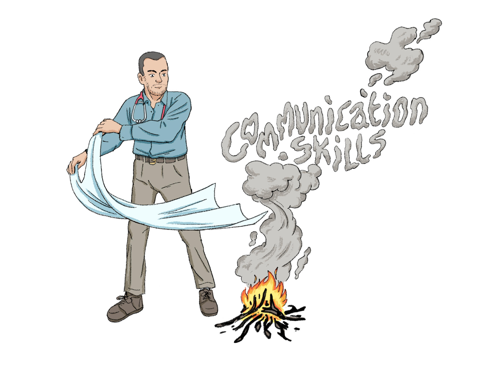

Real General Practice aims to help GPs in training, and GPs, to improve their communication skills and their knowledge of how to do their job in the consulting room.
This part of the Real General Practice website will guide you through a series of workshops. Many of the workshops are audio recordings of small group learning sessions but some of the workshops are video recordings.- 1. How to structure your GP consultation. Consider using our map of the consultation.
- 2. Learn some Calgary Cambridge communication skills
- 3. Learn how to make shared decisions with your patients
- 4. How might you talk to patients with emotional health difficulties?
- 5. How can I make sure I don’t miss any important symptoms? Learn the right red flag questions to ask patients. How can I provide an appropriate safety net so that patients come back at the right time if their symptoms change?
- 6. How can I make sure that I only give patients the information that they want, or need, from me? Learn how to elicit, provide and elicit.
- 7. How can I pass the Clinical Skills Assessment or the Recorded Case Assessment?.
- 8. Learn how to communicate with young people: watch our video of how to use the HEADSSS tool.
- 9. Videos that teach you how to ensure that older people choose where and how they are treated.